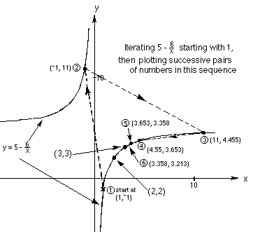

2d. This is a most interesting thing that I found in doing all
this iteration. 
When Jonathan iterated this function, see 2.a, starting with 1, he
got: 1,
-1,11, 4.4545, 3.653, 3.358, 3.213,... When I first worked on
this, I decided to graph consecutive
pairs of this infinite sequence. What happened was the points started at
(1,-1), went to (-1,11) on the other part of the curve, then went back to
the first piece and moved along this section approaching (3,3). This
of course is the limit of the sequence and the one root of the original
quadratic equation. WOW!
To order Don's
materials
Back to Ch. 8 part 2- Iteration
Mathman home